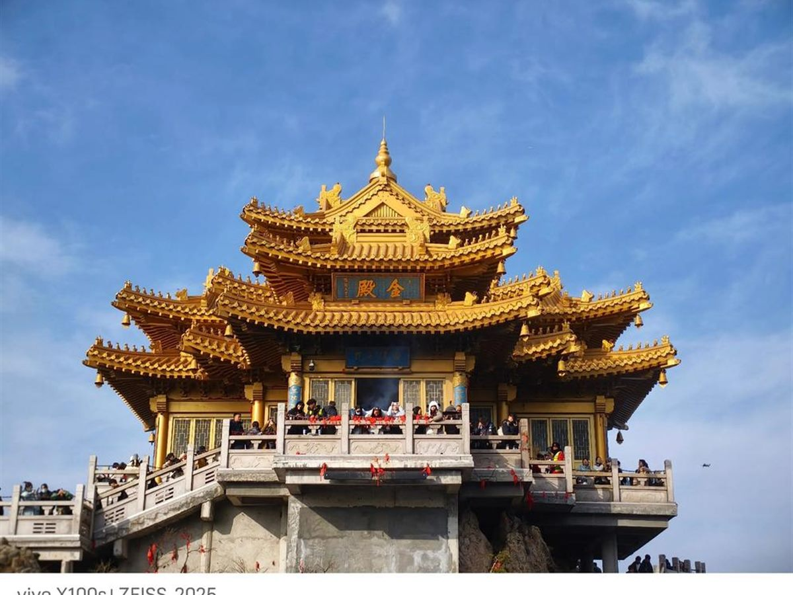
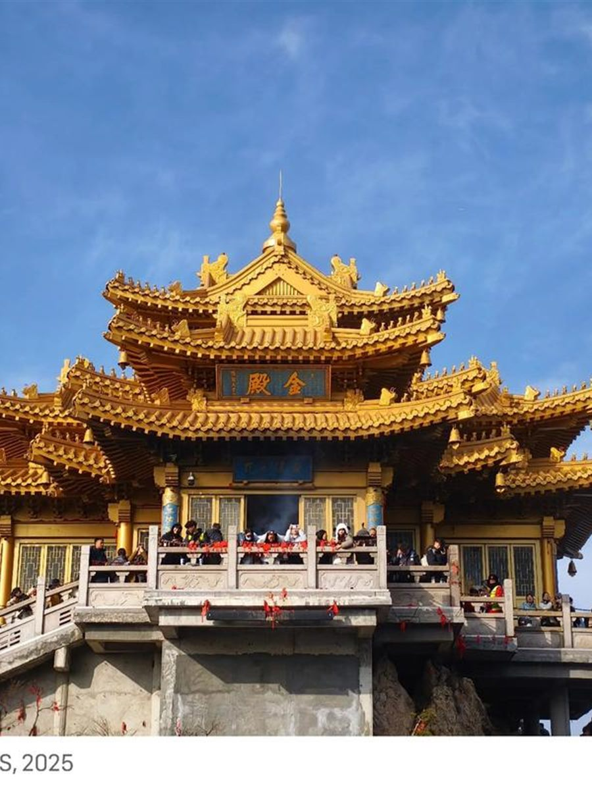
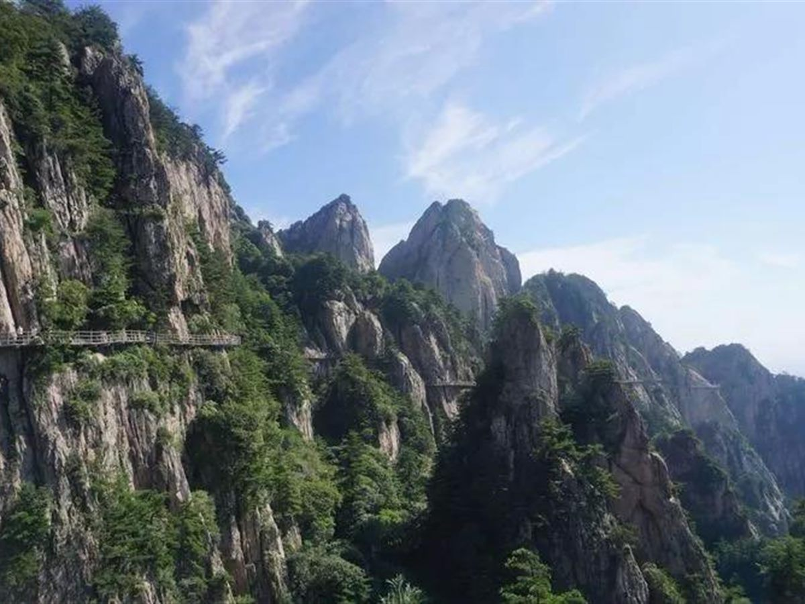
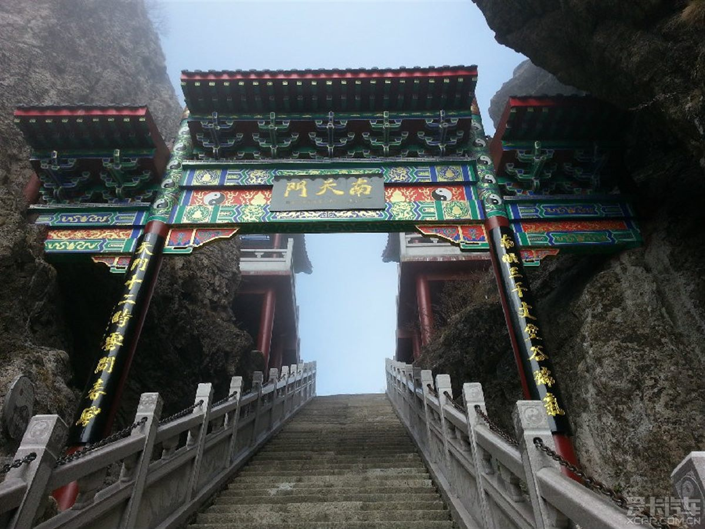

金顶道观群
老君山的灵魂所在。老君庙、玉皇顶、亮宝台、金殿沿山脊排开，铜瓦鎏金的屋顶在云海之上熠熠生辉，是国内海拔最高的道教建筑群之一。
八百里伏牛主峰 · 中原第一仙山
老君山位于河南省洛阳市栾川县，是秦岭余脉八百里伏牛山脉的主峰，海拔 2217 米。原名景室山，因道家始祖老子（李耳）曾在此归隐修炼而得名，自北魏起山上便建有铁顶老君庙，香火延续一千五百余年。
这里的花岗岩峰林地貌历经亿万年风化剥蚀，形成了峰林、怪石、幽谷、飞瀑并存的奇绝景观。春日杜鹃漫山，夏季云海翻涌，秋来红叶染谷，冬至雾凇满枝，四时之景各不相同。
登临金顶，脚下云涛如海，远山浮沉若岛。日出时金光破云，庙宇铜瓦映出暖色；暮色里群山隐入青黛，只余檐角风铃轻响。

从山门到金顶，一步一景。索道穿云而上，石阶隐入雾中，每一处转角都藏着不同的天地。

老君山的灵魂所在。老君庙、玉皇顶、亮宝台、金殿沿山脊排开，铜瓦鎏金的屋顶在云海之上熠熠生辉，是国内海拔最高的道教建筑群之一。

绵延十余里的花岗岩峰林，峰柱如笔、崖壁如屏，松石相映，移步换景。晴天看层峦叠翠，云雾起时则如水墨长卷徐徐展开。
山脚的一条幽深峡谷，溪水常年不涸，飞瀑深潭连缀成串。夏日走进谷中，凉意扑面，是避暑戏水的好去处。
老君山最负盛名的奇观。雨雪初霁的清晨，云涛自谷底涌起，铺满千山万壑；红日跃出云面时，整片云海被染成金红。

通往金顶的最后一道关隘。石阶陡峭，两侧崖壁夹峙，云雾从门洞中穿过，颇有「天门中断」的磅礴气势。
金顶区域的制高点，视野最为开阔。立于顶上，可俯瞰整个金顶建筑群与四面云海，是拍摄全景与云瀑的理想位置。
高差与气候共同塑造了老君山多变的容颜，无论何时到访，都不会看到同一座山。
四至五月，山间杜鹃次第开放，粉白与嫩绿铺满坡谷，云雾也带着草木清香。
山下闷热时，山上气温低十余度。雨后云海频繁，是避暑观云的最佳时节。
十月中下旬，黄栌与枫树染红山谷，晴日通透，远山层次分明，最宜登高。
雪后初晴，峰林披银，枝头雾凇晶莹，金顶在雪色中更显庄重清寂。
关于门票、索道、交通与游览路线的一些参考，出行前请以景区当日公告为准。